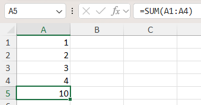
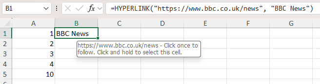
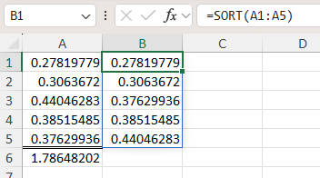
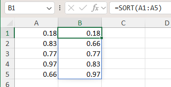
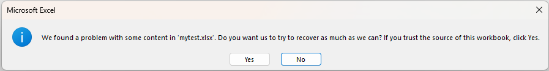
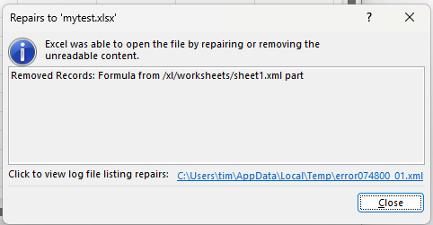

Using Formulas
XLSX.jl provides two functions allowing direct access to cell formulas, XLSX.getFormula and setFormula.
Using a simple formula
Find the formula in a cell using the XLSX.getFormula function. This returns a string representation of the function used in the specified cell (e.g. "=A1+B1"). For most standard functions, this is the same as the representation of the same formula in the Excel formula bar (but see the section on Newer Functions (below) for exceptions).
Similarly, set a formula in a cell using the setFormula function, entering the function exactly as it would appear in the Excel formula bar.
To set a formula, it must be a valid Excel formula and written in US english with a comma separator. Cell references may be absolute or relative references in either the row or the column or both (e.g. \$A\$2). No validation of the specified formula is made by XLSX.jl and the formula will be accepted as given.
For example:
julia> using XLSX
julia> f=newxlsx()
XLSXFile("blank.xlsx") containing 1 Worksheet
sheetname size range
-------------------------------------------------
Sheet1 1x1 A1:A1
julia> s=f[1]
1×1 Worksheet: ["Sheet1"](A1:A1)
julia> s[1:4, 1]=1:4
1:4
julia> setFormula(s, "A5", "=sum(A1:A4)") # function names are case insensitive. Excel converts them all to uppercase.
"=sum(A1:A4)"
julia> XLSX.getFormula(s, "A5")
"=sum(A1:A4)"
Special characters need escaping in the usual way, so that absolute references must be written as, for example, \$A\$1. Similarly, when entering text strings into formulas, quotation marks need to be escaped. For example:
julia> setFormula(s, "B1", "=hyperlink(\"https://www.bbc.co.uk/news\", \"BBC News\")")
"=hyperlink(\"https://www.bbc.co.uk/news\", \"BBC News\")"
julia> XLSX.getFormula(s, "B1")
"=hyperlink(\"https://www.bbc.co.uk/news\", \"BBC News\")"
Valid formulae of arbitrary complexity and degree of nesting are supported.
julia> setFormula(s, "B1", "=MID(A1, FIND(\"-\",A1)+1, FIND(\"-\",A1, FIND(\"-\",A1)))")
"=MID(A1, FIND(\"-\",A1)+1, FIND(\"-\",A1, FIND(\"-\",A1)))"
julia> setFormula(s, "B2", "AND(ROUNDDOWN(A1,0)-TODAY()>(7-WEEKDAY(TODAY())),ROUNDDOWN(A1,0)-TODAY()<(15-WEEKDAY(TODAY())))")
"AND(ROUNDDOWN(A1,0)-TODAY()>(7-WEEKDAY(TODAY())),ROUNDDOWN(A1,0)-TODAY()<(15-WEEKDAY(TODAY())))"Since XLSX.jl does not and cannot replicate all the functions built in to Excel, setting a formula in a cell does not permit the cell's value to be re-calculated within XLSX.jl. Instead, although the formula is properly added to the cell, the value is set to missing. However, the saved XLSXFile is set to force Excel to re-calculate on opening.
julia> using XLSX
julia> f=newxlsx("setting formulas")
XLSXFile("blank.xlsx") containing 1 Worksheet
sheetname size range
-------------------------------------------------
setting formulas 1x1 A1:A1
julia> s=f[1]
1×1 Worksheet: ["setting formulas"](A1:A1)
julia> s["A2:A10"]=1
1
julia> s["A1:J1"]=1
1
julia> setFormula(s, "B2:J10", "=A2+B1") # adds formulae but cannot update calculated values
julia> s[:]
10×10 Matrix{Any}:
1 1 1 1 1 1 1 1 1 1
1 missing missing missing missing missing missing missing missing missing
1 missing missing missing missing missing missing missing missing missing
1 missing missing missing missing missing missing missing missing missing
1 missing missing missing missing missing missing missing missing missing
1 missing missing missing missing missing missing missing missing missing
1 missing missing missing missing missing missing missing missing missing
1 missing missing missing missing missing missing missing missing missing
1 missing missing missing missing missing missing missing missing missing
1 missing missing missing missing missing missing missing missing missing
# formulae are there for when the saved file is opened in Excel.
julia> XLSX.getFormula(s, "B2")
"=A2+B1"
julia> XLSX.getFormula(s, "J10")
"=I10+J9"Referenced formulas
If a contiguous range is specfied, setFormula will usually create a ReferencedFormula. This is the same as Excel would use if using drag fill to copy a formula into a range of cells.
The first cell in the range (reference cell) contains the formula and the other cells in the range contain a reference to the reference cell. The formula returned by XLSX.getFormula will be adjusted appropriately to allow for the offset from the reference cell. This will match what is shown in the formula bar for this cell in Excel.
julia> s[1:4, 1]=1:4
1:4
julia> setFormula(s, "B1", "=A1")
"=A1"
julia> setFormula(s, "B2:B4", "=B1+A2") # creates a running total
"=B1+A2"
julia> XLSX.getFormula(s, "B2")
"=B1+A2"
julia> XLSX.getFormula(s, "B4") # returned formula is adjusted for offset
"=B3+A4"Unlike with conventional functions, dynamic array functions (e.g. SORT or UNIQUE) should not be put into a ReferencedFormula and neither should functions that refer to cells in other sheets. When functions of this type are identified, they will instead be duplicated individually in each cell in the given range (but with relative cell references appropriately adjusted). This is an internal process that should be transparent to the user.
External references
An existing formula may contain references to cells in external workbooks, in the form [index]SheetName!A1 where index is an integer providing an internal Excel reference to the external workbook. XLSX.getFormula can be used to obtain the file name of the external reference using the keyword option get_external_refs=true to replace the index with the actual workbook path (as stored in the workbook's externalReferences). By default, get_external_refs=false and the formula is returned unchanged.
julia> XLSX.getFormula(s, "B1")
"[1]Sheet1!\$A\$1"
julia> XLSX.getFormula(s, "B1"; get_external_refs=true)
"[https://d.docs.live.net/.../Documents/Julia/XLSX/linked-2.xlsx]Sheet1!\$A\$1"It is not currently possible to use setFormula to create a formula that references a worksheet in an external file.
Newer functions
Microsoft continues to add new functions to Excel with increasing complexity. Some of these are not represented straightforwardly in the internal xml files using the representation shown in the formula bar like "traditional" formulas are. Instead, these need function prefixes when written to file. For example:
julia> s[1:5, 1]=rand(5)
5-element Vector{Float64}:
0.2781977934853824
0.3063671990614626
0.44046282567557327
0.38515484505427067
0.37629936008012144
julia> setFormula(s, "A6", "sum(A1:A5)") # traditional function
"sum(A1:A5)"
julia> setFormula(s, "B1", "sort(A1:A5)") # needs a prefix. `setFormula` adds this transparently to the user.
"_xlfn.SORT(A1:A5)"
julia> setBorder(s, "A6";top=["style"=>"double"])
1
julia> writexlsx("mytest.xlsx", f, overwrite=true)
"C:\\Users\\...\\Julia\\XLSX\\mytest.xlsx"The prefix is not shown by Excel in the formula bar, but it is needed in the internal xml file. setFormula adds this prefix automatically. A dummy ref xml attribute is also created by setFormula and will be properly calculated on opening when Excel determines the spill range.

<c r="B1" cm="1">
<f t="array" ref="B1:B1">_xlfn.SORT(A1:A5)</f> # prefix `_xlfn.` and `t` and `ref` attributes required by Excel
</c>
<c r="A6" s="1">
<f>sum(A1:A5)</f> # simple representation as shown in the formula bar
</c>The functions GROUPBY and PIVOTBY need an aggregation function as their 3rd/4th argument respectively. Currently only simple aggregator functions are supported (e.g. SUM, AVERAGE, COUNT, COUNTA, MIN, MAX, MEDIAN, PRODUCT, STDEV, STDEVP, VAR and VARP) by default (i.e. with raw=false).
More complex versions of theses functions and some of the other newer Excel functions are not easy to parse. For example, Excel's LAMBDA function is not well supported (in GROUPBY/PIVOTBY or otherwise). Moreover, as Microsoft adds more new functions in future that require a prefix or that generate a spill range (or both), setFormula may not recognise them automatically.
For these cases, a keyword option, raw, is provided (default=false), allowing the internal xml representation of a function (which may differ significantly from its representation in the formula bar) to be entered directly. This allows any arbitrary future function to be added using setFormula. An additional keyword, spill (default=nothing), can be used to tell setFormula that the raw function will create a spill range (or to force it not to). The simplest way to determine the raw representation of any arbitrary function is to create it in Excel and then to inspect the resulting xml file. For example:
setFormula(f[1], "H21", "_xlfn.GROUPBY(E1:E151,A1:D151,_xlfn.LAMBDA(_xlpm.x,AVERAGE(_xlpm.x)),3,1)"; raw=true)
# setFormula recognises the `GROUPBY` function so, in this case, it is not necessary to specify `spill=true`
Spill ranges
Some functions, such as SORT or UNIQUE, will return multiple values and Excel will "spill" these into a spill range the extent of which depends on the data on which the function is operating. Generally, setFormula will handle this transparently and create a cell formula that spills when needed by adding an attribute t="array" to the cell in the internal xml file. For example
julia> s[1:5, 1]=rand(5)
5-element Vector{Float64}:
0.1826020207094764
0.8336742268414907
0.773953482649498
0.9739450126819114
0.6627007761343171
julia> s[1:5, 2]="" # make sure these aren't EmptyCells so spill range can be formatted
""
julia> setFormula(s, "B1", "=sort(A1:A5)") # cell B1 contains the formula but the result spills down to B5
"=_xlfn.SORT(A1:A5)"
julia> setFormat(s, "A1:B5";format="Number")
-1
Even simple formulas can be made to spill in recent versions of Excel. For example, any cell given the formula "=A1:A5" would produce a 5-element result and would spill to fill 5 cells.
You may include a spill range in a formula using the base cell name with a # suffix, and this is treated as a reference to the full spill range. For example, to add an extra column to the above table, use setFormula(s, "C1", "=2*B1#") just as in Excel. The result will spill to fill cells C1:C5.
If a function Excel expects to return a spill range does not have attribute t="array" set, Excel will automatically create an "implicit intersection" when it opens the file by adding an @ prefix to the function name. The @ symbol tells Excel to return a single value from a range or array, based on the context of the formula. For example, if a formula references a column of values but is entered in a single cell, Excel uses @ to pick the value from the same row as the formula.
For most formulas, setFormula will determine the correct attribute value for t. In cases where it doesn't (usually when using raw=true), it is possible to force the formula to indicate (to Excel) that it spills using the spill=true keyword option as described above. Similarly, in the unlikely event that setFormula might choose to create a spill function incorrectly, this can be prevented with spill=false.
Only rarely in complex, nested formulae involving cell range references, aggregator functions and/or dynamic array functions, and for any function that spills as a direct result of using a named cell range, should it be necessary to use the raw keyword option described above.
Excel is often very fussy about the internal structure of an xlsx file but the resulting error messages (when Excel tries to open a file it considers malformed) may be somewhat cryptic. If there is an error in the formula you enter, it may not be clear what it is from the error Excel produces (as shown below). A safe fall back may be to test the formula in Excel itself and copy/paste it into julia. Alternatively, copy the formula directly from the xml representation of a working Excel file and use the raw=true keyword option (and spill=true if the function used creates a spill range).
For example:
julia> f=newxlsx()
XLSXFile("blank.xlsx") containing 1 Worksheet
sheetname size range
-------------------------------------------------
Sheet1 1x1 A1:A1
julia> f[1][1:3, 1]=collect(1:3)
3-element Vector{Int64}:
1
2
3
julia> setFormula(f[1], "B1", "=max(A1:A3") # missing closing parenthesis in the formula
"=max(A1:A3"
julia> XLSX.getFormula(f[1], "B1")
"=max(A1:A3"
julia> writexlsx("mytest.xlsx", f, overwrite=true)
"C:\\Users\\...\\Julia\\XLSX\\mytest.xlsx"

